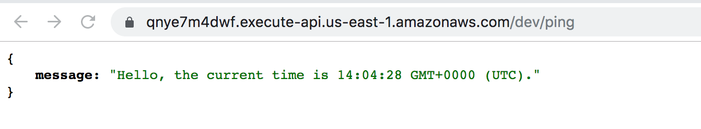

云技术已经彻底改变了我们管理应用程序的方式，尽管很多公司早已不再使用物理服务器，但他们仍然从服务器的角度来看待他们的系统。
如果我们试图把服务器的概念忘掉，并开始把基于云的应用程序视为工作流、分布式逻辑和外部管理的数据存储，会是什么情况？
本文文我们一起探讨下 Serverless。
和其它软件开发趋势一样，Serverless 并没有一个清晰的概念，它可以用在两种不同但又有些相似的领域：
- Serverless 最初是用来描述那些结合第三方、云托管来管理服务器端逻辑和状态的应用。通常是一些「富客户端」应用，比如单页 web 应用或者手机 APP，它们可以使用第三方提供的庞大生态系统来进行云端存储（比如：国内的 LeanCloud，国外的 Parse、Firbase）。这些类型的服务之前被称为「后端即服务」或「BaaS」。
- Serverless 还可以表示另一种情况，开发人员仍然编写服务器端应用代码，但是与传统架构不同，这个应用运行在无状态的容器中，这些容器是事件触发、短暂（可能只调用一次）并且由第三方来管理的。这种做法通常被理解为「函数即服务」或「FaaS」。AWS Lambda 是目前提供「函数即服务」的实现之一。
尽管有 Serverless 这个名字，但实际并不是在没有服务器的情况下运行代码。之所以使用「无服务器计算（serverless computing）」这个名称，是因为拥有系统的企业或个人不必为运行后端应用而采购、租用、配置服务器或虚拟机。
Serverless 有以下优势：
- 无服务器管理（无需管理任何形式的服务器）
- 按执行付费（不为空闲时间买单）
- 自动伸缩（根据需求伸缩）
- 函数作为应用的逻辑单元
Serverless 模式鼓励将开发重点放在定义明确的业务逻辑单元上，而无需考虑如何部署、扩容或其它一些过早优化。因此开发的重点也应该是单个功能或模块，而不是一个具有大范围功能的服务。Serverless 将开发人员从部署的麻烦中解放出来，使得他们能够专注于按照逻辑封装应用。
一个典型的例子是将图片上传到文件存储，此事件调用一个 Serverless 函数，这个函数创建图片的缩略图然后把该缩略图存入文件存储中，并将缩略图位置记录在 NoSQL 数据库中。数据写入 NoSQL 数据库的事件可能还会触发其他函数。这个缩略图创建函数只需按需运行，唯一的成本是调用该函数的次数。
和其他技术一样，Serverless 并不完美。它的缺点是应用监控和调试将会变得困难，只能依靠于服务产生的日志记录。同时，在有服务间调用事件时，可能会出现供应商锁定。并且现有的 IDE 对 Serverless 函数支持也不够友好。
简单 HTTP 服务示例
Serverless 框架 —— 可以构建由微服务组成的应用，这些微服务在响应事件时运行，并且可以自动扩容、只在运行期间收费。
下边的例子将演示如何实现一个简单的 HTTP GET 端点，调用它时会返回当前的时间。内部函数名为 currentTime，HTTP 端点为 ping。
快速上手 Serverless
- 通过 npm 安装 serverless 程序
1 | npm install -g serverless |
- 配置安全凭证
- 创建服务
我们需要新建 handler.js 和 serverless.yml 文件来描述和部署我们的 severless 函数。
1 | // handler.js |
1 | // serverless.yml |
本地函数调用
在命令行中执行
1 | serverless invoke local --function currentTime |
返回结果如下：
1 | { |
部署
部署应用只需执行
1 | serverless deploy |
在安全凭证配置正确的情况下会看到类似下边的结果：
1 | Serverless: Packaging service... |
使用
现在，我们可以直接调用 AWS Lambda 服务，并且可以同时获取执行日志：
1 | serverless invoke --function currentTime --log |
或者使用如 curl 等工具发送一个 HTTP 请求来查看结果：
1 | curl https://qnye7m4dwf.execute-api.us-east-1.amazonaws.com/dev/ping |
甚至可以直接用浏览器访问：
